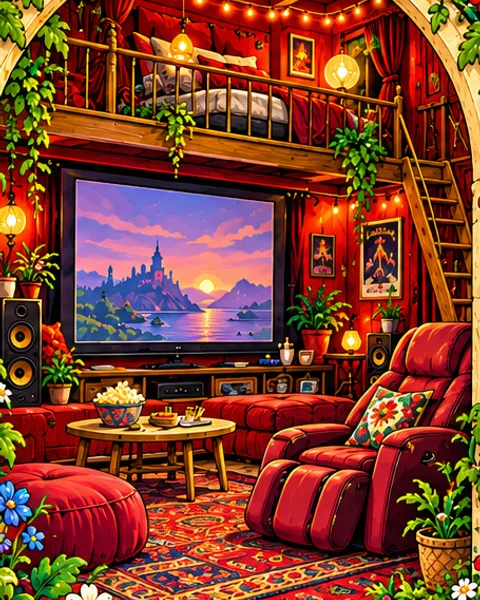
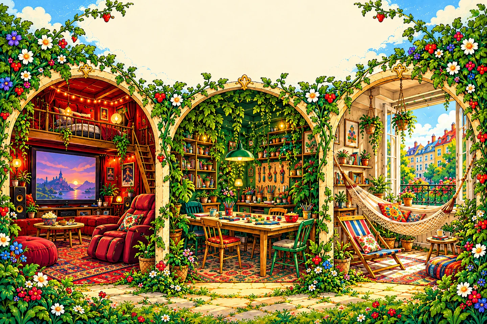
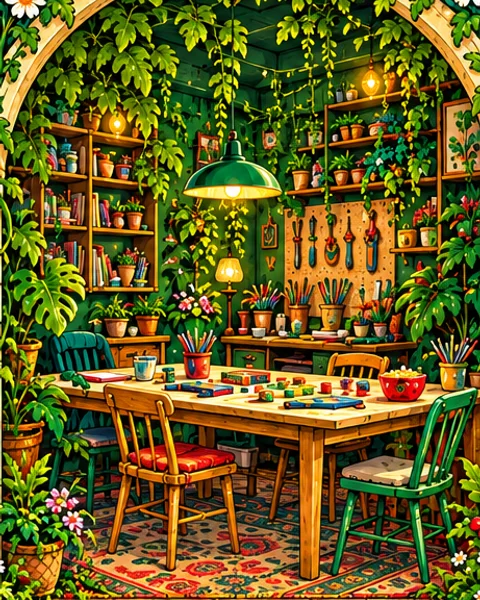
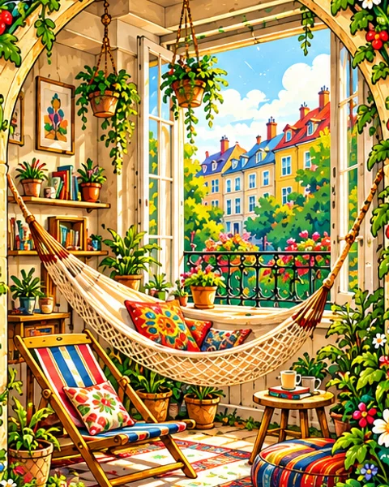

Film & Entspannung
Das Rote Zimmer.
Ein Medienzimmer zum Eintauchen und Entspannen. Heimkinoanlage und Lichterkette machen es gemütlich, der Massagestuhl lädt zum Abschalten ein. Oben auf der Hochebene liegt ein Bett.

Drei kuschelige Höhlen.
Ein Ort der RubybubysTravelkiez
Drei Räume. Viele Möglichkeiten.
Rot zum Eintauchen. Grün zum gemeinsamen Machen. Hell, um die Atmosphäre des Kiezes zu genießen.

Film & Entspannung
Ein Medienzimmer zum Eintauchen und Entspannen. Heimkinoanlage und Lichterkette machen es gemütlich, der Massagestuhl lädt zum Abschalten ein. Oben auf der Hochebene liegt ein Bett.

Spielen & Basteln
Ein kleiner Jungle mit einem großen Tisch zum Spielen und Basteln. Viele Werkzeuge und Materialien geben Ideen Platz, Form anzunehmen. Hier wird gemeinsam gemacht.

Fenster zum Kiez
Gemütlich eingerichtet und offen zur Straße: Mit einem Teppich, Liegestühlen oder einer Hängematte lässt sich hier die Atmosphäre des Kiezes genießen. Ein Platz zum Verweilen und Teilhaben.
Ein Ort der Rubybubys
In ThreeDen wohnt Julius Rubybubius, das Gründungsmitglied der Rubybubys. Hier kommen wir zusammen und feiern unsere gemeinsame Silvesterparty.
Dein Weg nach ThreeDen
Im Kalender siehst du die freigegebenen Besuchszeiten. Frage einen passenden Zeitraum an und warte auf die Bestätigung.
Besuchszeiten ansehen →Was in ThreeDen stattfindet, erscheint hier im Kalender. Öffentlich freigegebene Veranstaltungen können auch im Travelkiez und bei den Rubybubys sichtbar sein.
Veranstaltungen ansehen →Ein freies Event-Zeitfenster ist der Anfang. Beschreibe bei deiner Anfrage, was du vorhast; gemeinsam klärt ihr die Einzelheiten.
Event-Zeitfenster anfragen →Ein Zuhause bleibt ein Zuhause
Eine feste Zusage entsteht mit der Bestätigung. Adresse, Zugang und persönliche Absprachen gehören in den privaten Austausch. Im öffentlichen Kalender stehen nur bewusst freigegebene Angaben.